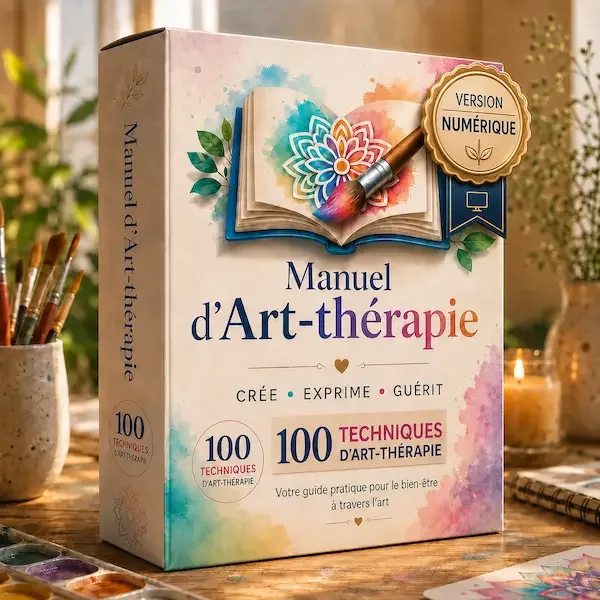
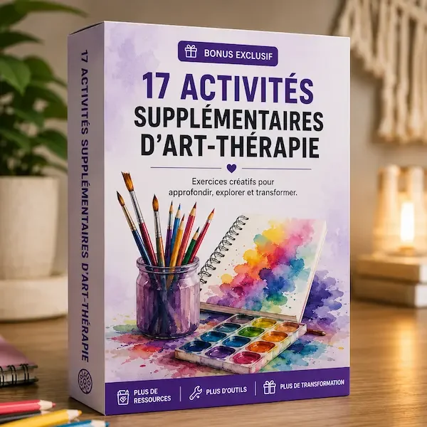
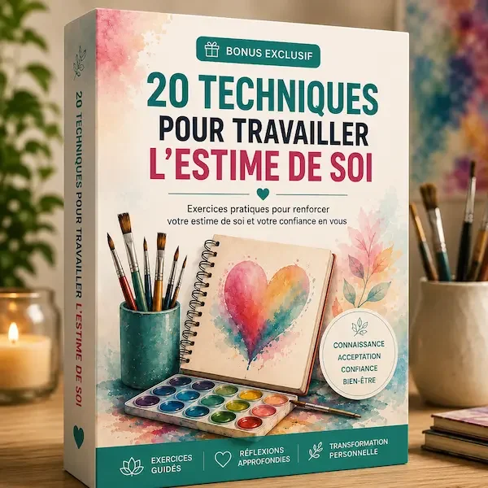
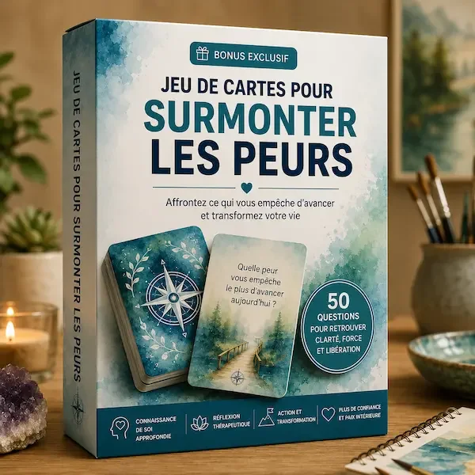
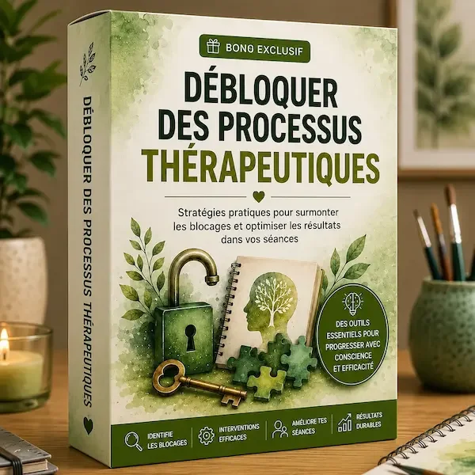
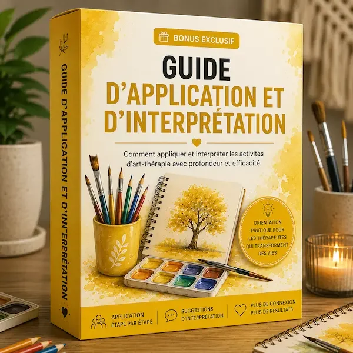
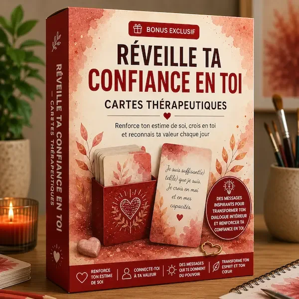
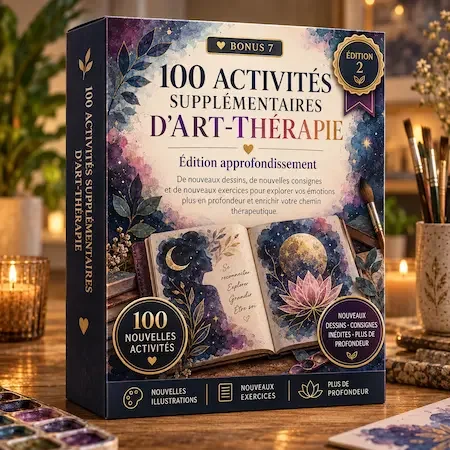
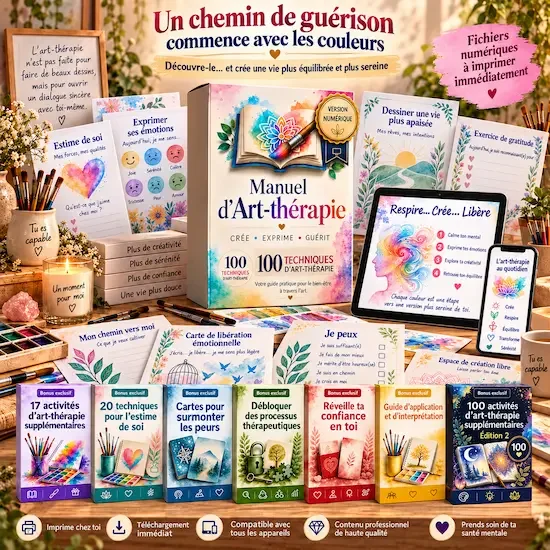
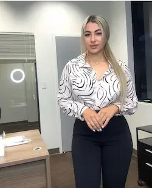

Météo des émotions
Représentez votre état émotionnel du moment à travers des images simples.
🎨 Offre de lancement — Démonstration du compte à rebours Compte à rebours · Démo
⏰ 1:47:23
PRÉVISUALISATION INDÉPENDANTE · Textes, chiffres et avis repris de la référence pour tester la présentation. Paiement via Hotmart.
✦ Bibliothèque numérique · Accès immédiat
En 7 jours, passez de la surcharge mentale à plus de calme intérieur grâce à des activités d’art-thérapie guidées à faire chez vous, dès aujourd’hui.
Collage, journaling et exercices autour de la couleur pour exprimer ce que vous ressentez sans avoir besoin de parler, de tout expliquer ni de savoir dessiner. Dix minutes par jour peuvent suffire.
★★★★★
27 visiteurs · exemple de présentation
ACCÉDER À L’OFFRE →
🔒 Paiement sécurisé 📧 Accès immédiat 🎁 6 bonus inclus 📱 100% numérique
🛡️ Garantie de 30 jours · 🔒 Paiement sécurisé · 📧 Accès immédiat par e-mail
+100
Activités
6
Bonus gratuits
10
Min. par jour
4,9/5
★★★★★
Note
Vous vous reconnaissez ?
Le problème n’est pas un manque de volonté. C’est qu’il y a parfois trop de choses à l’intérieur, sans savoir comment les exprimer.
Votre esprit ne s’arrête jamais : vous ruminez, vous pensez à tout et vous finissez épuisée, même lorsque vous avez l’impression de « ne pas avoir fait grand-chose ».
Vous disposez d’activités guidées pour ralentir, vous recentrer et apaiser le flot des pensées.
Vous gardez beaucoup de choses pour vous : certaines émotions sont difficiles à mettre en mots.
Vous apprenez à vous exprimer à travers les couleurs, l’écriture et les formes, sans rechercher la perfection.
Vous vous changez les idées sur les réseaux sociaux, mais la charge mentale revient dès que vous posez votre téléphone.
Vous créez un véritable moment de pause pour vous recentrer et vous reconnecter à vous-même.
L’art-thérapie vous offre une façon simple, visuelle et intime de donner une forme à ce que vous ressentez.
Le Manuel d’Art-thérapie vous donne un point de départ concret.
Le Manuel d’Art-thérapie vous donne un point de départ concret.
Vous n’avez pas besoin de savoir dessiner pour utiliser l’art comme moyen d’expression.
Il ne s’agit pas de créer des œuvres parfaites. Il s’agit d’utiliser la création pour vous exprimer, relâcher les tensions et revenir à vous, même avec quelques minutes par jour.
À qui s'adresse ce manuel ?
Un même manuel, deux façons de l’utiliser.
Pour vous
Pour votre bien-être personnel
- Vous voulez exprimer ce que vous ressentez sans avoir à l'expliquer
- Vous n’avez aucune expérience artistique — et vous n’en avez pas besoin
- Vous cherchez 10 minutes de calme dans votre journée
- Vous avancez à votre rythme, chez vous
Pour votre pratique
Pour accompagner les autres
- Psychologues, thérapeutes, éducateurs, coachs, travailleurs sociaux
- Plus de 100 activités prêtes à proposer, en individuel ou en groupe
- Un guide d’application et d’interprétation inclus (Bonus 5)
- Des supports pour faciliter l’expression lorsque les mots viennent difficilement
Vous vous reconnaissez dans les deux profils ? C’est le cas de nombreuses personnes qui utilisent le manuel.
De la tension intérieure à plus de calme, en 4 étapes simples
Vous choisissez une activité, préparez simplement ce dont vous avez besoin et suivez les consignes pas à pas.
1
Vous choisissez l’une des 100+ activités proposées
2
Vous préparez du papier, des couleurs ou simplement le matériel que vous avez déjà chez vous
3
Vous suivez les consignes et vous vous laissez guider, sans chercher à faire quelque chose de parfait
4
Vous terminez l’activité à votre rythme et prenez un instant pour observer ce que vous ressentez
Aucune expérience requise Accessible aux débutants Chez vous ou en séance 100% numérique
APERÇU RÉEL DU MANUEL
Voyez exactement ce que vous allez recevoir
Voici 10 pages réelles extraites du manuel. Vous recevez un PDF numérique avec des consignes guidées et des activités imprimables — ce n’est ni un cours vidéo ni une formation pour apprendre à dessiner.
Tournesol de l’estime de soi
Identifiez vos qualités et donnez-leur une place à travers les couleurs.
Les ballons du lâcher-prise
Notez ce que vous souhaitez laisser partir : peurs, regrets ou pensées qui vous pèsent.
Montagne de la force intérieure
Visualisez les défis que vous avez traversés et les forces que vous avez développées.
Arbre de la gratitude
Notez puis colorez ce qui nourrit votre sentiment de gratitude.
Le pont vers le mieux-être
Reliez ce que vous ressentez aujourd’hui à ce que vous souhaitez cultiver pour votre bien-être.
Le sablier du temps
Identifiez ce que vous souhaitez laisser derrière vous et ce vers quoi vous voulez avancer.
Chemin vers l’acceptation de soi
Représentez les étapes importantes de votre parcours personnel.
Balles anti-stress
Identifiez vos sources de stress et les ressources qui vous aident à mieux les gérer.
Le fleuve du lâcher-prise
Écrivez ce que vous souhaitez laisser partir, puis imaginez-le s’éloigner.
📄 PDF numérique
🖨️ Activités imprimables
✍️ Consignes pas à pas
🎨 Aucune expérience nécessaire
🎁 Avec votre achat, vous recevez le manuel + 6 bonus numériques inclus sans frais supplémentaires
Tout ce qu'il vous faut pour commencer dès aujourd'hui
Accès immédiat · Paiement unique · Accessible sur tous vos appareils
📲 Le manuel et les 6 bonus sont des fichiers numériques à télécharger et à imprimer chez vous si vous le souhaitez. Les images ci-dessous sont présentées à titre illustratif — aucun produit physique ne vous sera envoyé par la poste.

PRODUIT PRINCIPAL
Manuel d'Art-thérapie
Le contenu principal réunit des activités guidées d’art-thérapie, du journaling créatif et des exercices d’expression émotionnelle, accessibles sans connaissances préalables — chez vous ou dans votre pratique professionnelle.

BONUS 1
17 activités supplémentaires d'art-thérapie
Des exercices créatifs pour explorer vos émotions plus en profondeur.

BONUS 2
20 exercices pour renforcer l’estime de soi
Des exercices guidés pour développer la confiance en soi et soutenir votre bien-être.

BONUS 3
Cartes d’introspection autour des peurs
50 questions pour mieux comprendre vos peurs, prendre du recul et avancer avec plus de clarté.

BONUS 4
Dépasser les blocages émotionnels
Des outils pour identifier les blocages, prendre du recul et ouvrir de nouvelles pistes de réflexion.

BONUS 5
Guide d’application et d’interprétation
Découvrez comment proposer, utiliser et interpréter les activités étape par étape — pour vous-même ou pour accompagner quelqu’un.

BONUS 6
Renforcez votre confiance en vous
Des cartes d’inspiration avec des messages pour nourrir et renforcer votre confiance en vous.

🆕 NOUVEAU · CADEAU SUPPLÉMENTAIRE
100 activités supplémentaires d’art-thérapie — Édition 2
Une nouvelle collection entièrement différente du manuel principal : nouveaux dessins, nouvelles consignes et nouvelles activités pour aller plus loin dans l’exploration émotionnelle et approfondir votre pratique.
Valeur totale des 6 bonus : EUR 55
🎁 6 BONUS INCLUS
· + 1 nouveau cadeau supplémentaire offert aujourd’hui
Une bibliothèque créative pour mieux accueillir et exprimer vos émotions
Le Manuel d'Art-thérapie réunit activités, ressources et guides pratiques pour créer votre espace d'expression émotionnelle — pour vous, ou pour les personnes que vous accompagnez. Aucune expérience requise.
0Activités
0Bonus inclus
0Exercices supplémentaires
0
★★★★★
Note /50Accès immédiat
0Jours de garantie
Offre de lancement
Manuel d'Art-thérapie
+ 6 bonus exclusifs

- 🎨Manuel d’Art-thérapie — contenu principalEUR 83
- 🖼️17 activités supplémentairesEUR 10
- 💜20 exercices pour l’estime de soiEUR 8
- 🃏Cartes d’introspection autour des peursEUR 9
- 🔓Dépasser les blocages émotionnelsEUR 10
- 📘Guide d’application et d’interprétationEUR 8
- ✨Renforcez votre confiance en vousEUR 10
- 🆕Cadeau supplémentaire : 100 activités — Édition 2OFFERT EN PLUS
Valeur des contenus déjà chiffrés : EUR 138
17,97 €
Accès immédiat · Paiement unique
JE VEUX Y ACCÉDER MAINTENANT →🔒 Paiement sécurisé · 🛡️ Garantie satisfait ou remboursé de 30 jours
27 visiteurs · exemple de présentation
Ce qu’en disent les personnes qui l’utilisent déjà
Chez elles, pour retrouver un moment de calme. Ou en cabinet, pour ouvrir la parole autrement.
★★★★★
Camille Martin
Lyon
★★★★★
« J’ai téléchargé le fichier une fois les enfants couchés en me disant que j’allais juste tester une activité. Finalement, j’y suis restée presque une demi-heure sans m’en rendre compte. Ce que j’aime surtout, c’est que les consignes sont simples et qu’on n’a vraiment pas besoin de savoir dessiner. J’ai imprimé quelques pages et je les garde près de mon bureau pour les avoir sous la main quand j’en ai envie. »
Julie Bernard
Bordeaux
★★★★☆
« Au début, j’avoue que j’ai trouvé qu’il y avait beaucoup de contenu et je ne savais pas trop par où commencer. Après avoir feuilleté quelques pages, j’ai choisi un exercice simple avec des couleurs et j’ai beaucoup aimé. Maintenant, tous les quelques jours, j’ouvre le fichier et je choisis quelque chose selon mon humeur. J’aurais juste aimé avoir un démarrage un peu plus guidé. »
Claire Moreau
Nantes
★★★★★
« Quand je suis stressée, j’ai tendance à rester sur mon téléphone sans voir le temps passer. J’ai essayé de remplacer ça par une activité de dix minutes avant de dormir. Je ne vais pas dire que ça règle tout, évidemment, mais au moins j’ai quelque chose à faire au lieu de passer des heures à faire défiler mon écran. »
Élodie Laurent
Toulouse
★★★★★
« J’ai fait ma première activité un matin en buvant mon café. Je pensais que ce serait un peu comme un simple livre de coloriage, mais il y a aussi des questions et des petites réflexions qui font qu’on pense à certaines choses pendant qu’on crée. Maintenant, j’imprime les pages qui me plaisent et je les fais tranquillement à mon rythme. »
Sophie Dubois
Lille
★★★★☆
« Je l’ai acheté parce que je cherchais quelque chose à faire chez moi loin des écrans. Certaines activités me correspondent plus que d’autres, mais je trouve ça normal. Il y en a suffisamment pour toujours trouver quelque chose qui me convient selon le moment. Et l’impression à la maison est vraiment simple. »
Manon Lefèvre
Strasbourg
★★★★★
« Je ne sais vraiment pas dessiner. Quand j’ai ouvert le fichier la première fois, je me suis dit que je n’allais jamais y arriver. Puis j’ai commencé par une activité très simple, davantage basée sur les couleurs et l’écriture. Depuis, je ne me demande plus si ce que je fais est joli ou non, je me concentre simplement sur l’exercice. »

Amélie Roux
Montpellier
★★★★★
« J’essaie de me garder un moment plus calme une fois par semaine, généralement le vendredi après-midi. Maintenant, je choisis une page et je m’installe avec un thé. Parfois je termine l’activité, parfois non, et justement j’aime bien ça : je n’ai pas l’impression d’avoir quelque chose à accomplir à tout prix. »
Laura Fontaine
Paris
★★★★★
« Ce que j’apprécie le plus, c’est qu’il n’y a presque rien à préparer. J’ai déjà du papier et des crayons chez moi, donc ça suffit. Hier, après une longue journée de travail, j’ai fait une activité pendant une quinzaine de minutes. Pour moi, c’est une façon agréable de couper un peu avec la journée quand je rentre chez moi. »
Garantie satisfait ou remboursé de 30 jours
Vous recevez immédiatement l’accès au contenu par e-mail, vous le téléchargez sur votre appareil et pouvez essayer les premières activités tranquillement chez vous. Si vous estimez que le contenu ne correspond pas à vos attentes, vous pouvez demander un remboursement dans les 30 jours suivant votre achat. L’objectif est simple : vous proposer un support clair pour vous exprimer, apaiser le flot des pensées et vous accorder un vrai moment pour vous.
Questions fréquentes
1. Dois-je savoir dessiner ou peindre ?
Non. L’objectif n’est pas de créer de belles œuvres ni de savoir dessiner. Les activités utilisent la création comme moyen d’expression émotionnelle, même si vous n’avez aucune expérience artistique.
2. De quel matériel ai-je besoin ?
Vous pouvez commencer avec du papier, des crayons, des feutres, des stylos, des magazines, des ciseaux, de la colle ou simplement le matériel que vous avez déjà chez vous.
3. Puis-je l'utiliser dans ma pratique professionnelle ?
Oui. De nombreuses personnes qui accompagnent d'autres — psychologues, thérapeutes, éducateurs, coachs, travailleurs sociaux — s'appuient sur ces activités dans leur travail, en individuel ou en groupe. Le Bonus 5 (Guide d’application et d’interprétation) explique justement comment les proposer et les interpréter. L'accès reste personnel : vous pouvez utiliser les activités dans votre pratique, mais la revente ou la redistribution des fichiers n'est pas autorisée.
4. Est-ce une thérapie ou un traitement médical ?
Non. Il s’agit d’un outil de bien-être et d’expression créative, conçu pour vous aider à vous poser et à donner une forme à ce que vous ressentez. Il ne remplace pas un suivi médical ou psychologique et ne constitue pas un traitement. En cas de souffrance importante ou persistante, consultez un professionnel de santé.
5. De combien de temps ai-je besoin par jour ?
De nombreuses activités peuvent se faire en 10 à 20 minutes. L’idée est de pouvoir les intégrer facilement à votre quotidien, sans pression ni objectif de performance.
6. Que vais-je recevoir exactement ?
Vous recevez le Manuel d’Art-thérapie avec ses activités guidées, ses exercices d’expression émotionnelle, du journaling créatif ainsi que 6 bonus numériques. En ce moment, vous recevez également un nouveau cadeau supplémentaire avec 100 activités inédites.
7. Comment vais-je recevoir le contenu ?
L’accès est immédiat et automatique. Une fois votre achat validé, vous recevez le contenu numérique directement par e-mail, sans attente ni étape supplémentaire. Pensez également à vérifier votre dossier de courriers indésirables.
8. Y a-t-il une garantie ?
Oui. Vous bénéficiez d’une garantie satisfait ou remboursé de 30 jours pour découvrir et essayer le contenu. L’accès est envoyé immédiatement par e-mail après votre achat.
Vous pouvez continuer à mettre vos émotions de côté.
Ou vous offrir enfin un espace pour les accueillir.
Vous n’avez besoin d’aucune expérience artistique. Choisissez une activité, accordez-vous 10 minutes et commencez simplement à donner une forme à ce que vous ressentez.
✅ JE VEUX Y ACCÉDER MAINTENANT →🎁 6 bonus · 🆕 Nouveau cadeau supplémentaire offert · 🛡️ Garantie 30 jours · ⚡ Accès immédiat